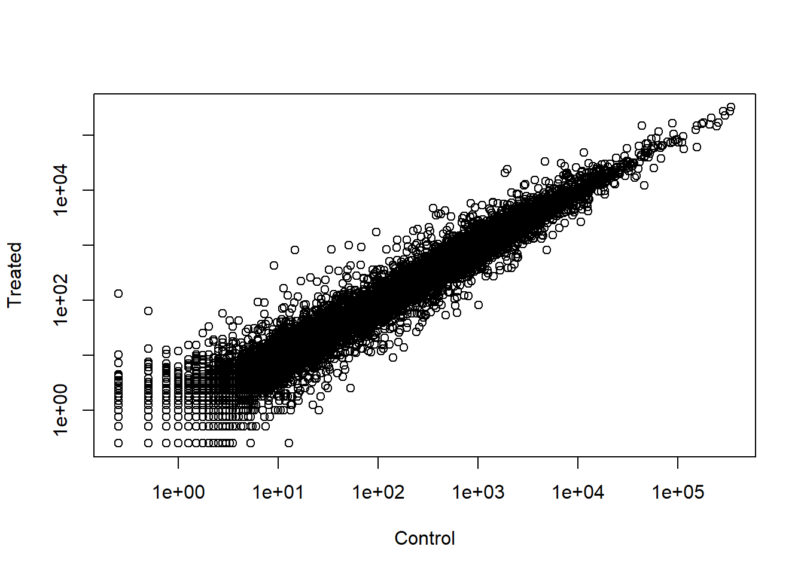
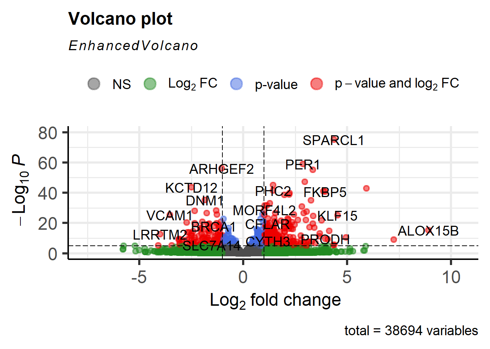

Lab 13: Transcriptomics and the analysis of RNA-Seq data
Author
Qiman A17912409
Background
The data for this hands-on session comes from a published RNA-seq experiment where airway smooth muscle cells were treated with dexamethasone, a synthetic glucocorticoid steroid with anti-inflammatory effects. Himes et al. used RNA-seq to profile gene expression changes in four different ASM cell lines treated with dexamethasone glucocorticoid.They found a number of differentially expressed genes but focus much of the discussion on a gene called CRISPLD2.
Bioconductor setup
As we already noted in a previous class Bioconductor is a large repository and resource for R packages that focus on analysis of high-throughput genomic data.
Recall that Bioconductor packages are installed differently than “regular” R packages from CRAN. To install the core Bioconductor packages, copy and paste the following two lines of code into your R console one at a time: install.packages("BiocManager")BiocManager::install()
Finally, check that you have installed everything correctly by entering the following two commands at the console window:
library(BiocManager)
Bioconductor version '3.22' is out-of-date; the current release version '3.23'
is available with R version '4.6'; see https://bioconductor.org/install
library(DESeq2)
Loading required package: S4Vectors
Loading required package: stats4
Loading required package: BiocGenerics
Loading required package: generics
Attaching package: 'generics'
The following objects are masked from 'package:base':
as.difftime, as.factor, as.ordered, intersect, is.element, setdiff,
setequal, union
Attaching package: 'BiocGenerics'
The following objects are masked from 'package:stats':
IQR, mad, sd, var, xtabs
Welcome to Bioconductor
Vignettes contain introductory material; view with
'browseVignettes()'. To cite Bioconductor, see
'citation("Biobase")', and for packages 'citation("pkgname")'.
Attaching package: 'Biobase'
The following object is masked from 'package:MatrixGenerics':
rowMedians
The following objects are masked from 'package:matrixStats':
anyMissing, rowMedians
Import countData and colData
As input, the DESeq2 package expects (1) a data.frame of count data (as obtained from RNA-seq or another high-throughput sequencing experiment) and (2) a second data.frame with information about the samples - often called sample metadata (or colData in DESeq2-speak because it supplies metadata/information about the columns of the countData matrix)
#loading in the csv filescounts <-read.csv("airway_scaledcounts.csv", row.names =1)metadata <-read.csv("airway_metadata.csv")
id dex celltype geo_id
1 SRR1039508 control N61311 GSM1275862
2 SRR1039509 treated N61311 GSM1275863
3 SRR1039512 control N052611 GSM1275866
4 SRR1039513 treated N052611 GSM1275867
5 SRR1039516 control N080611 GSM1275870
6 SRR1039517 treated N080611 GSM1275871
Q1. How many genes are in this dataset?
dim(counts)
[1] 38694 8
nrow(counts)
[1] 38694
There are 38,694 genes in this dataset.
Q2. How many ‘control’ cell lines do we have?
sum(metadata$dex =="control")
[1] 4
There are 4 control cell lines.
Toy differential gene expression
Lets perform some exploratory differential gene expression analysis. Note: this analysis is for demonstration only. NEVER do differential expression analysis this way!
Note that the control samples are SRR1039508, SRR1039512, SRR1039516, and SRR1039520. This bit of code will first find the sample id for those labeled control. Then calculate the mean counts per gene across these samples:
control <- metadata[metadata[,"dex"]=="control",]control.counts <- counts[ ,control$id]control.mean <-rowSums( control.counts )/4head(control.mean)
Q3. How would you make the above code in either approach more robust? Is there a function that could help here?
The above code would be more robust if it is not hard coded to divide by 4 since ther number of control samples could change. It might be better to use the function rowMeans()
Q4. Follow the same procedure for the treated samples (i.e. calculate the mean per gene across drug treated samples and assign to a labeled vector called treated.mean)
Directly comparing the raw counts is going to be problematic if we just happened to sequence one group at a higher depth than another. Later on we’ll do this analysis properly, normalizing by sequencing depth per sample using a better approach. But for now, colSums() the data to show the sum of the mean counts across all genes for each group. Your answer should look like this:
colSums(meancounts)
control.mean treated.mean
23005324 22196524
Q5 (a). Create a scatter plot showing the mean of the treated samples against the mean of the control samples. Your plot should look something like the following.
Warning in xy.coords(x, y, xlabel, ylabel, log): 15032 x values <= 0 omitted
from logarithmic plot
Warning in xy.coords(x, y, xlabel, ylabel, log): 15281 y values <= 0 omitted
from logarithmic plot

Here we calculate log2foldchange, add it to our meancounts data.frame and inspect the results either with the head() or the View() function for example.
There are a couple of “weird” results. Namely, the NaN (“not a number”) and -Inf (negative infinity) results.
The NaN is returned when you divide by zero and try to take the log. The -Inf is returned when you try to take the log of zero. It turns out that there are a lot of genes with zero expression. Let’s filter our data to remove these genes.
Q7. What is the purpose of the arr.ind argument in the which() function call above? Why would we then take the first column of the output and need to call the unique() function?
arr.ind=TRUE helps find which genes have zero expression. We take the first column to get the gene row numbers and use unique() so duplicated row numbers are not repeated before removing those genes.
A common threshold used for calling something differentially expressed is a log2(FoldChange) of greater than 2 or less than -2. Let’s filter the dataset both ways to see how many genes are up or down-regulated.
Q8. Using the up.ind vector above can you determine how many up regulated genes we have at the greater than 2 fc level?
sum(up.ind)
[1] 250
There are 250 up regulated genes at the greater than 2fc level
Q9. Using the down.ind vector above can you determine how many down regulated genes we have at the greater than 2 fc level?
sum(down.ind)
[1] 367
There are 367 down regulated genes at the greater than 2fc level
Q10. Do you trust these results? Why or why not?
I do not fully trust these reulst becuase this is only using a simple fold-change cutoff. A gene can have a lrge fold change without being statistically significant. We have not calculated any p-values or accounted for variation between samples.
Setting up for DESeq
library(DESeq2)citation("DESeq2")
To cite package 'DESeq2' in publications use:
Love, M.I., Huber, W., Anders, S. Moderated estimation of fold change
and dispersion for RNA-seq data with DESeq2 Genome Biology 15(12):550
(2014)
A BibTeX entry for LaTeX users is
@Article{,
title = {Moderated estimation of fold change and dispersion for RNA-seq data with DESeq2},
author = {Michael I. Love and Wolfgang Huber and Simon Anders},
year = {2014},
journal = {Genome Biology},
doi = {10.1186/s13059-014-0550-8},
volume = {15},
issue = {12},
pages = {550},
}
We will use the DESeqDataSetFromMatrix() function to build the required DESeqDataSet object and call it dds, short for our DESeqDataSet. If you get a warning about “some variables in design formula are characters, converting to factors” don’t worry about it. Take a look at the dds object once you create it.
Before running DESeq analysis we can look how the count data samples are related to one another via our old friend Principal Component Analysis (PCA). We will follow the DESeq recommended procedure and associated functions for PCA. First calling vst() to apply a variance stabilizing transformation (read more about this in the expandable section below) and then plotPCA() to calculate our PCs and plot the results.
We can also build the PCA plot from scratch using the ggplot2 package. This is done by asking the plotPCA function to return the data used for plotting rather than building the plot.
# have the plot PCA function return the datapcaData <-plotPCA(vsd, intgroup=c("dex"), returnData=TRUE)
using ntop=500 top features by variance
head(pcaData)
PC1 PC2 group name id dex celltype
SRR1039508 -17.607922 -10.225252 control SRR1039508 SRR1039508 control N61311
SRR1039509 4.996738 -7.238117 treated SRR1039509 SRR1039509 treated N61311
SRR1039512 -5.474456 -8.113993 control SRR1039512 SRR1039512 control N052611
SRR1039513 18.912974 -6.226041 treated SRR1039513 SRR1039513 treated N052611
SRR1039516 -14.729173 16.252000 control SRR1039516 SRR1039516 control N080611
SRR1039517 7.279863 21.008034 treated SRR1039517 SRR1039517 treated N080611
geo_id sizeFactor
SRR1039508 GSM1275862 1.0193796
SRR1039509 GSM1275863 0.9005653
SRR1039512 GSM1275866 1.1784239
SRR1039513 GSM1275867 0.6709854
SRR1039516 GSM1275870 1.1731984
SRR1039517 GSM1275871 1.3929361
# Calculate percent variance per PC for the plot axis labelspercentVar <-round(100*attr(pcaData, "percentVar"))
Here, we’re running the DESeq pipeline on the dds object, and reassigning the whole thing back to dds, which will now be a DESeqDataSet populated with all those values.
dds <-DESeq(dds)
estimating size factors
estimating dispersions
gene-wise dispersion estimates
mean-dispersion relationship
final dispersion estimates
fitting model and testing
Since we’ve got a fairly simple design (single factor, two groups, treated versus control), we can get results out of the object simply by calling the results() function on the DESeqDataSet that has been run through the pipeline.
res <-results(dds)res
log2 fold change (MLE): dex treated vs control
Wald test p-value: dex treated vs control
DataFrame with 38694 rows and 6 columns
baseMean log2FoldChange lfcSE stat pvalue
<numeric> <numeric> <numeric> <numeric> <numeric>
ENSG00000000003 747.1942 -0.3507030 0.168246 -2.084470 0.0371175
ENSG00000000005 0.0000 NA NA NA NA
ENSG00000000419 520.1342 0.2061078 0.101059 2.039475 0.0414026
ENSG00000000457 322.6648 0.0245269 0.145145 0.168982 0.8658106
ENSG00000000460 87.6826 -0.1471420 0.257007 -0.572521 0.5669691
... ... ... ... ... ...
ENSG00000283115 0.000000 NA NA NA NA
ENSG00000283116 0.000000 NA NA NA NA
ENSG00000283119 0.000000 NA NA NA NA
ENSG00000283120 0.974916 -0.668258 1.69456 -0.394354 0.693319
ENSG00000283123 0.000000 NA NA NA NA
padj
<numeric>
ENSG00000000003 0.163035
ENSG00000000005 NA
ENSG00000000419 0.176032
ENSG00000000457 0.961694
ENSG00000000460 0.815849
... ...
ENSG00000283115 NA
ENSG00000283116 NA
ENSG00000283119 NA
ENSG00000283120 NA
ENSG00000283123 NA
Convert the res object to a data.frame with the as.data.frame() function and then pass it to View() to bring it up in a data viewer.
baseMean log2FoldChange lfcSE stat pvalue
ENSG00000000003 747.1941954 -0.35070302 0.1682457 -2.0844697 0.03711747
ENSG00000000005 0.0000000 NA NA NA NA
ENSG00000000419 520.1341601 0.20610777 0.1010592 2.0394752 0.04140263
ENSG00000000457 322.6648439 0.02452695 0.1451451 0.1689823 0.86581056
ENSG00000000460 87.6826252 -0.14714205 0.2570073 -0.5725210 0.56696907
ENSG00000000938 0.3191666 -1.73228897 3.4936010 -0.4958463 0.62000288
padj
ENSG00000000003 0.1630348
ENSG00000000005 NA
ENSG00000000419 0.1760317
ENSG00000000457 0.9616942
ENSG00000000460 0.8158486
ENSG00000000938 NA
We can summarize some basic tallies using the summary function.
summary(res)
out of 25258 with nonzero total read count
adjusted p-value < 0.1
LFC > 0 (up) : 1563, 6.2%
LFC < 0 (down) : 1188, 4.7%
outliers [1] : 142, 0.56%
low counts [2] : 9971, 39%
(mean count < 10)
[1] see 'cooksCutoff' argument of ?results
[2] see 'independentFiltering' argument of ?results
The results function contains a number of arguments to customize the results table. By default the argument alpha is set to 0.1. If the adjusted p value cutoff will be a value other than 0.1, alpha should be set to that value:
res05 <-results(dds, alpha=0.05)summary(res05)
out of 25258 with nonzero total read count
adjusted p-value < 0.05
LFC > 0 (up) : 1236, 4.9%
LFC < 0 (down) : 933, 3.7%
outliers [1] : 142, 0.56%
low counts [2] : 9033, 36%
(mean count < 6)
[1] see 'cooksCutoff' argument of ?results
[2] see 'independentFiltering' argument of ?results
Adding annotation data
We need to “map” or “translate” our ENSEMBLE gene identifiers in our results object to date to the identifiers used in different databases we want to use for learning morea bout these genes.
For this we will use a couple of BioConductor packages.
library("AnnotationDbi")library("org.Hs.eg.db")
The later of these is is the organism annotation package (“org”) for Homo sapiens (“Hs”), organized as an AnnotationDbi database package (“db”), using Entrez Gene IDs (“eg”) as primary key. To get a list of all available key types that we can use to map between, use the columns() function:
We can use the maplds() function to add individual columnds to our results table:
res$symbol <-mapIds(org.Hs.eg.db,keys=row.names(res), # Our genenameskeytype="ENSEMBL", # The format of our genenamescolumn="SYMBOL", # The new format we want to addmultiVals="first")
'select()' returned 1:many mapping between keys and columns
head(res)
log2 fold change (MLE): dex treated vs control
Wald test p-value: dex treated vs control
DataFrame with 6 rows and 7 columns
baseMean log2FoldChange lfcSE stat pvalue
<numeric> <numeric> <numeric> <numeric> <numeric>
ENSG00000000003 747.194195 -0.3507030 0.168246 -2.084470 0.0371175
ENSG00000000005 0.000000 NA NA NA NA
ENSG00000000419 520.134160 0.2061078 0.101059 2.039475 0.0414026
ENSG00000000457 322.664844 0.0245269 0.145145 0.168982 0.8658106
ENSG00000000460 87.682625 -0.1471420 0.257007 -0.572521 0.5669691
ENSG00000000938 0.319167 -1.7322890 3.493601 -0.495846 0.6200029
padj symbol
<numeric> <character>
ENSG00000000003 0.163035 TSPAN6
ENSG00000000005 NA TNMD
ENSG00000000419 0.176032 DPM1
ENSG00000000457 0.961694 SCYL3
ENSG00000000460 0.815849 FIRRM
ENSG00000000938 NA FGR
Q11. Run the mapIds() function two more times to add the Entrez ID and UniProt accession and GENENAME as new columns called res\(entrez, res\)uniprot and res$genename.
Finally, let’s write out the ordered significant results with annotations.
write.csv(res[ord,], "deseq_results.csv")
Data Visualization
Let’s make a Volcano Plot. These summary figures are used to highlight the proportion fo genes that are both significantly regulated and display a high fold change.
For even more customization use the EnhancedVolcano bioconductor package. First we will add the more understandable gene symbol names to our full results object res as we will use this to label the most interesting genes in our final plot.
library(EnhancedVolcano)
Loading required package: ggrepel
x <-as.data.frame(res)EnhancedVolcano(x,lab = x$symbol,x ='log2FoldChange',y ='pvalue')
Warning: Using `size` aesthetic for lines was deprecated in ggplot2 3.4.0.
ℹ Please use `linewidth` instead.
ℹ The deprecated feature was likely used in the EnhancedVolcano package.
Please report the issue to the authors.
Warning: The `size` argument of `element_line()` is deprecated as of ggplot2 3.4.0.
ℹ Please use the `linewidth` argument instead.
ℹ The deprecated feature was likely used in the EnhancedVolcano package.
Please report the issue to the authors.

Pathway Analysis
Now we have our annotated reuslts with their log2 fold-change and p-values we can figure out which biological pathways and processes these genese are involved with.
We will use gage and pathview packages for this step and we can install them with: BiocManager::install( c("pathview", "gage", "gageData") )
Now we can load the pakcages and setup the KEGG data-sets we need.
library(pathview)
##############################################################################
Pathview is an open source software package distributed under GNU General
Public License version 3 (GPLv3). Details of GPLv3 is available at
http://www.gnu.org/licenses/gpl-3.0.html. Particullary, users are required to
formally cite the original Pathview paper (not just mention it) in publications
or products. For details, do citation("pathview") within R.
The pathview downloads and uses KEGG data. Non-academic uses may require a KEGG
license agreement (details at http://www.kegg.jp/kegg/legal.html).
##############################################################################
library(gage)
library(gageData)data(kegg.sets.hs)# Examine the first 2 pathways in this kegg set for humanshead(kegg.sets.hs, 2)
The main gage() function requires a named vector of fold changes, where the names of the values are the Entrez gene IDs.
Note that we used the mapIDs() function above to obtain Entrez gene IDs (stored in res$entrez) and we have the fold change results from DESeq2 analysis (stored in res$log2FoldChange).
Now let’s try out the pathview() function to make a pathway plot with our RNA-seq expression results shown in color. To begin lets manuall supply a pathway.id that we could see from the print out above.